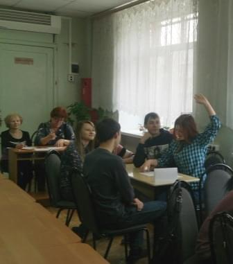
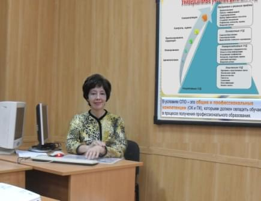

Новости
На этой странице сайта Вы найдете информацию с уроков информатики и ИКТ, а также внеклассных мероприятий, конкурсов и конференций, в которых принимали участие я и мои ученики...
Кроме того, здесь есть информация о новых методических материалах, размещенных на страничке Методическая копилка данного сайта, а также на различных образовательных порталах.
 Сегодня в рамках Декады информатики, физики и математики состоялась занимательно - развивающая игра "Сильное звено" по информатике и другим предметам. В соревновании принимали участие все группы 1 курса нашего профессионального лицея.Итоги игры: 1 место - команда группы 23, 2 место - команды групп 15/16 и 11/12, 3 место - группа 1/2.
Наш профессиональный лицей на конференции представляли зам. директора по УМР Рыбина Н. И. и преподаватель информатики и ИКТ Меркулова Т. Д., которая выступила с докладом "Использование метода проектов как одного из механизмов реализации ФГОС профессионального образования на уроках информатики и ИКТ".
 27 января в Институте развития образования в рамках межрегиональной научно-практической конференции "Внедрение ФГОС общего и профессионального образования: опыт и перспективы" руководители и педагоги Ивановской и Костромской областей встретились на заседаниях рабочих секций по обсуждению управленческих, технологических, инновационных аспектов внедрения ФГОС.
Наш профессиональный лицей на конференции представляли зам. директора по УМР Рыбина Н. И. и преподаватель информатики и ИКТ Меркулова Т. Д., которая выступила с докладом "Использование метода проектов как одного из механизмов реализации ФГОС профессионального образования на уроках информатики и ИКТ".
Сегодня в рамках Декады информатики, физики и математики состоялась занимательно - развивающая игра "Сильное звено" по информатике и другим предметам. В соревновании принимали участие все группы 1 курса нашего профессионального лицея.Итоги игры: 1 место - команда группы 23, 2 место - команды групп 15/16 и 11/12, 3 место - группа 1/2.
Наш профессиональный лицей на конференции представляли зам. директора по УМР Рыбина Н. И. и преподаватель информатики и ИКТ Меркулова Т. Д., которая выступила с докладом "Использование метода проектов как одного из механизмов реализации ФГОС профессионального образования на уроках информатики и ИКТ".